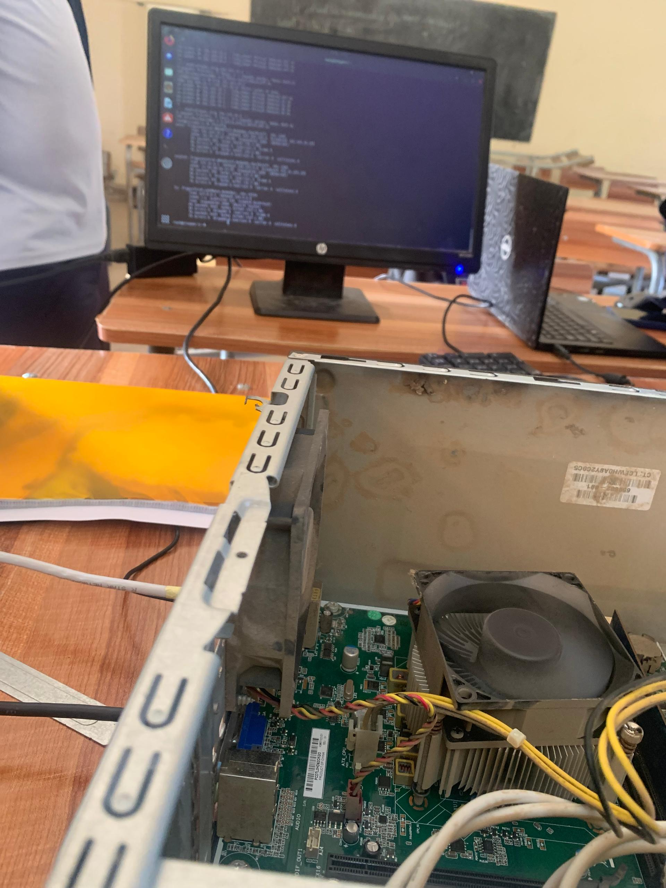

Pare-feu avec iptables sur UC recyclée
Création d’un firewall matériel sur une vieille unité centrale, placé entre le réseau local et Internet.
Création d’un firewall matériel sur une vieille unité centrale, placé entre le réseau local et Internet.
Ce projet a consisté à transformer une ancienne unité centrale en pare-feu dédié pour protéger un réseau local. Nous avons ajouté une seconde carte réseau afin de placer la machine entre le LAN et Internet, puis installé Linux pour utiliser iptables comme solution de filtrage.
Plusieurs attaques et scénarios ont été simulés pour tester l’efficacité du pare-feu :
